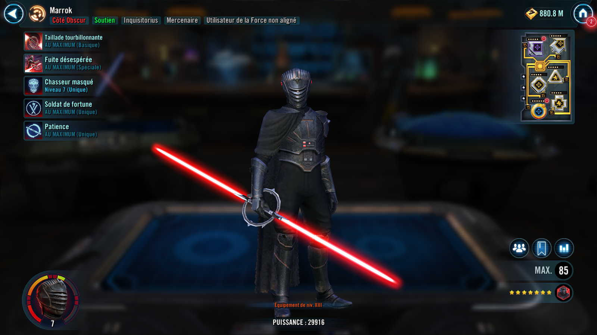

Marrok
A daunting support who uses Purge to terrorize his enemies
A daunting support who uses Purge to terrorize his enemies

Deal Special damage to the target enemy. If the enemy had a stack of Purge, inflict Tenacity Down for 1 turn. If it's Marrok's turn, all Mercenary allies gain Defense Up for 1 turn, otherwise inflict 3 stacks of Purge on the target enemy.
Deal Special damage to all enemies and deal an additional instance of damage to the target enemy. Expose target enemy for 1 turn.
If Marrok has 20 or more stacks of Soldier of Fortune, inflict Ability Block on all enemies with Purge for 1 turn.
Consume all stacks of Purge on the target enemy. If 6 stacks were consumed this way, reset this ability's cooldown.
For each stack of Purge consumed, grant Advantage to a random Mercenary ally who doesn't have it for 2 turns.
At the start of battle, Marrok gains 30% Max Health and Max Protection, and 50% Potency.
At the start of his turn, Marrok inflicts Defense Down for 1 turn on a random enemy with Purge, which can't be resisted. Whenever another Mercenary ally uses a Special ability, Marrok will assist.
Whenever Marrok scores a critical hit, all Mercenary allies gain 5% Offense (stacking, max 100%) until the end of the encounter. Whenever an enemy resists a debuff from a Mercenary ally, all Mercenary allies gain 10% Turn Meter. Whenever another Mercenary ally uses an ability on their turn, inflict a stack of Purge on the target enemy, which can't be resisted. Whenever a Mercenary ally reaches 20% Health for the first time, they gain Damage Immunity for 1 turn.
While Marrok has 20 or more stacks of Soldier of Fortune, whenever he attacks out of turn, reduce the Offense of the target enemy by 20% until the end of their next turn. If Marrok has 40 or more stacks of Soldier of Fortune, whenever he attacks out of turn, apply additional 3 stacks of Purge on all enemies and using Desperate Getaway will Expose all enemies for 2 turns.
OOmicron Boost : While in Territory Battles: At the start of battle, Marrok gains 2 stacks of Soldier of Fortune for each enemy. If Marrok is present, enemies can't be revived. All Inquisitorious allies are immune to percent based Health damage.
While an enemy has Purge, they can't recover Health and Protection, and Inquisitorious allies attacks deal additional True damage.

At the start of battle, Marrok gains 1 stack of Soldier of Fortune per Jedi or Light Side Unaligned Force User enemy.
At start of their turn all Mercenary allies gain 2% Defense Penetration for each stack of Soldier of Fortune they have until the end of their turn.
Marrok gains a stack of Soldier of Fortune for each stack of Purge inflicted by another Mercenary ally.
Marrok loses 3 stacks of Soldier of Fortune whenever he uses Desperate Getaway.
Whenever a Mercenary ally gains a stack of Soldier of Fortune, they recover 5% Health and Protection.
At the start of battle, if all allies (minimum 3) are Inquisitorius, this character gains 20% Max Health, Max Protection, and Potency.
Dispel debuffs from a random Inquisitorius ally whenever a stack of Purge is consumed or dispelled by any Inquisitorius ally.
Whenever an enemy damages this character with an attack while attacking out of turn, that enemy gains a stack of Purge (max 6), which can't be evaded or resisted.
Whenever Purge is consumed or dispelled on an enemy, this character gains 3% Turn Meter.